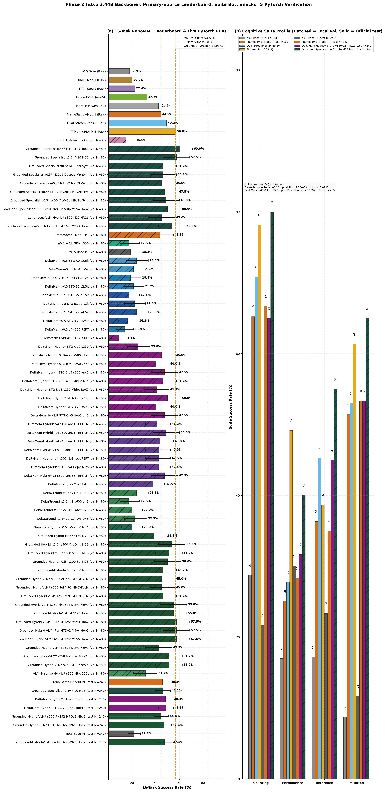
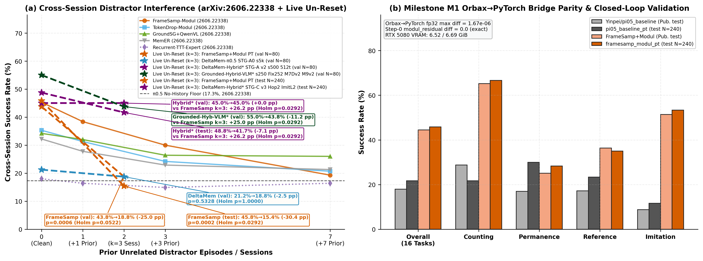
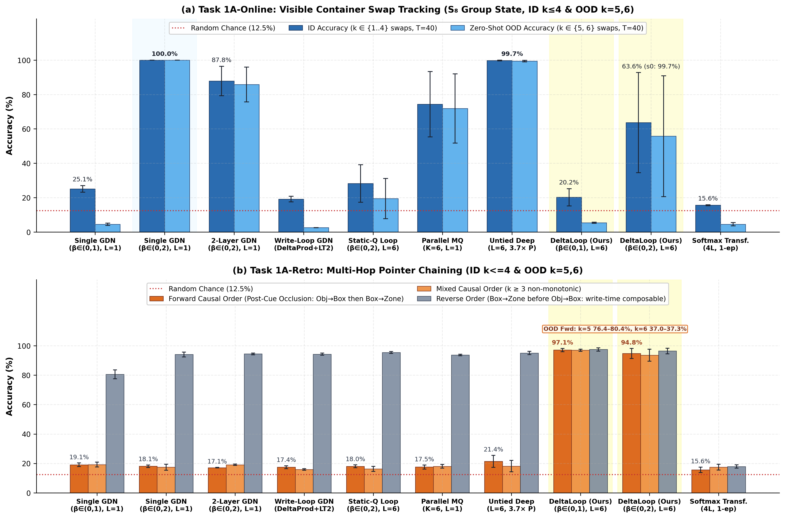

6 • Publication Figure Gallery
論文グレード図表ギャラリー（クリックで高解像度拡大）
Phase 2（fig_p2_1〜4）および Phase 1（fig1, fig2, fig5, fig8）の生成図表です。

Phase 2 Fig. 1 — 全体リーダーボード＆4スイート比較
test240 / val80 における提案手法・FrameSamp+Modul・T²Mem・π0.5 Base の比較。

Phase 2 Fig. 4 — 未リセット k=3 連続セッション干渉耐性＆変換精度
test240 k=3 での 41.67% vs 15.42% (p_holm = 0.0292) 優位と ≤1e-5 PyTorch 変換パリティ。

Phase 2 Fig. 2 — 全16タスク×全モデル成功率ヒートマップ
全77ランにわたるタスク別成功率の網羅的比較と意匠別の強み・弱みの可視化。

Phase 2 Fig. 3 — 推論レイテンシ・状態メモリ容量パレート境界
387.8 ms/chunk・0.51–2.94 MiB 状態による対 MemER / T²Mem 効率パレート。

Phase 1 Fig. 1 — 負固有値書込 β∈(0,2) とマルチホップ読出の機構分離
合成 S_8 容器入替追跡 100.0% と因果鎖逆引き 97.1% の分離実証。

Phase 1 Fig. 8 — 520 KB 凍結GDN状態プローブ（93.5% 計数・4.36 px 位置特定）
Phase 2 で大口径 3.44B π0.5 へ移行する根拠となった潜在状態保持能力の証明。